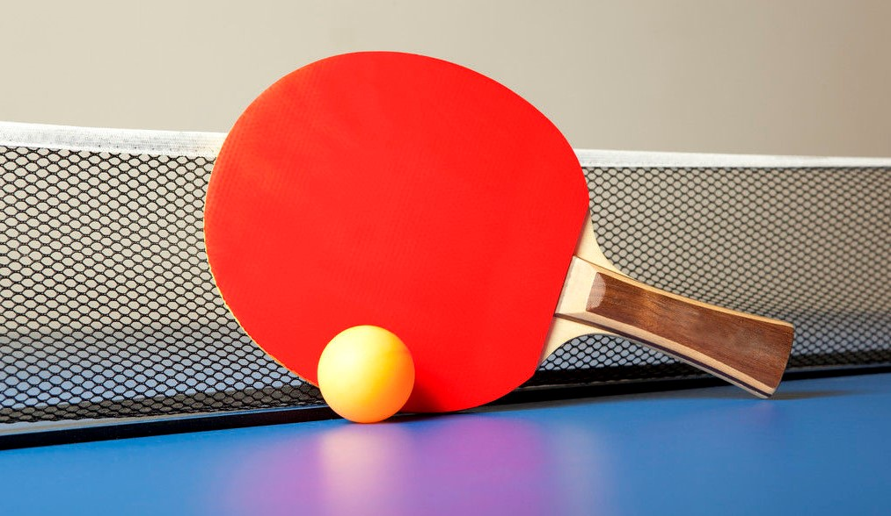
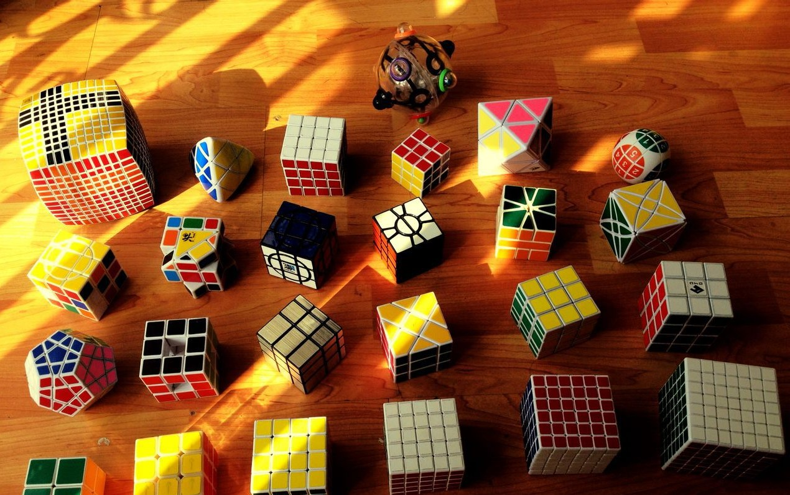
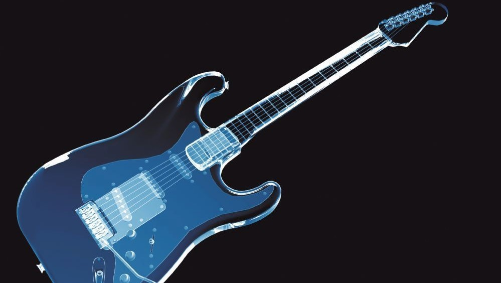

Ping Pong:(If you want to know more, please click the text above.)Table tennis originated in England, but Chinese people all know that table tennis is called China's national ball, which is a world popular ball sports, including attack, confrontation and defense. The competition is divided into groups, singles, doubles, mixed doubles and so on.And table tennis is also called table tennis.If you like table tennis, then I think we can be very good friends. Rubik's Cube:(If you want to know more, please click the text above.) Rubik's cube, also known as Rubik's cube, is called magic cube in Taiwan and torsion dice in Hong Kong. It was first invented by Professor Rubik elno of Budapest Institute of architecture in Hungary in 1974. Rubik's cube is an extreme hand sport.The most common cube is the third-order cube, but there are many kinds of cube, such as the second, fourth, fifth, mirror, pyramid, zongzi, five cube (twelve cube) ...and so on. Guitar:(If you want to know more, please click the text above.) Guitar, also translated as guitar or six string. A plucked instrument, usually having six strings, similar in shape to a violin. Although I only know a little basic guitar playing skills, it will not reduce my love for guitar. I think everyone who likes guitar has a great dream in his heart.
|